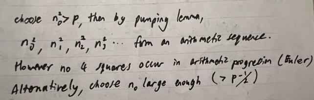
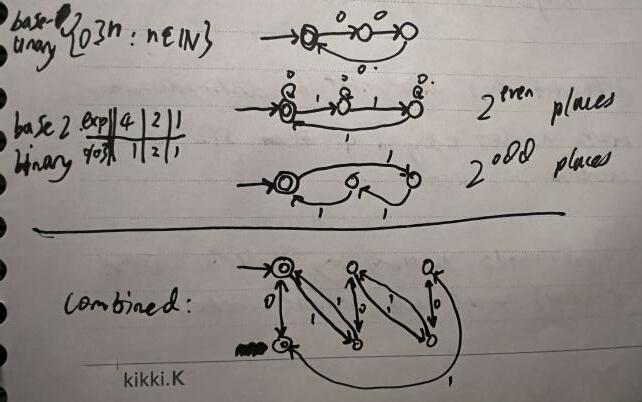
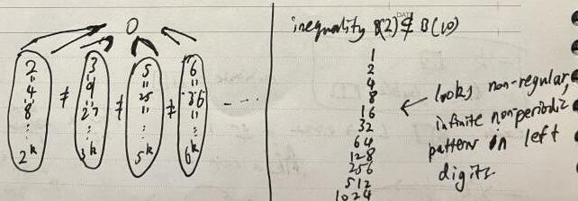
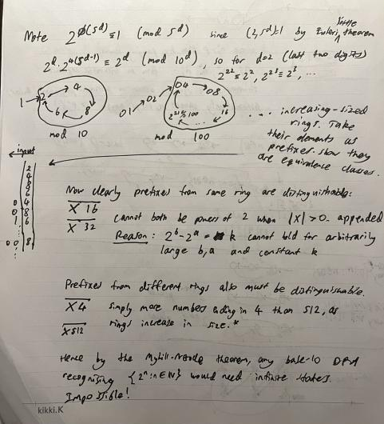

Regular number sets
Tagged as automata
Written on 2023-04-29 12:26:46
Have you ever wondered why you can't match powers of 2 with a regex? Well I didn't... at least until I took Theory of Computation and went down this number-theoretical rabbithole on a whim. Let's uncover some cool structure!
This journey started when I noticed certain sets like the naturals modulo k
were regular languages
in various bases and wondered to my complexity lecturer
which unary number sets could be recognised or 'computed' by a
DFA.
Evidently he knew something I didn't and thought I should figure it out for myself, since his answer was obliquely a question: are the unary square numbers a regular language? I quickly worked out that it was not, and proved a characterization of regular unary sets as those which had eventually periodic differences between their numerically-ordered elements (proof left to reader).

A natural direction was then to ask the same question for higher number bases.
Let's consider numbers represented in base b as strings of 0..b-1 with
least significant digits first (this choice is arbitrary, since
regular languages are closed under reversal of their strings).
As a first step, I noticed that by duplicating the DFA for a unary language and
adding transitions as drawn, you could recognise the same set of numbers in any
other base. Let's express this as B(0) ⊆ B(k) for any k > 1, suggesting that
the representable sets in 0 are contained within those of any logarithmic base k.
You might notice that the opposite is not true, namely powers of 2 clearly do not
have eventually periodic differences and so cannot be computed by a unary DFA.

Generalizing, it's fairly clear that the sets computable in base b remain
the same even if we raise the base to an arbitrary power b^k. This can be done
by switching every k transitions in the base-b DFA
for a single transition in the b^k alphabet and vice versa, so B(b) = B(b^k).
More subtly, it seems that bases corresponding to different powers c^j cannot
express the same regular sets, in particular the powers ofb.

Now let's try to formalize the original question a little in terms of this intuition. Since regexes (of the non-Perl kind) are equivalent to regular languages, we can ask whether the powers of 2 are regular over the base-10 alphabet. That is, can we construct a DFA which accepts exactly strings of 0-9 corresponding to powers of 2.
Intuitively, this should be false, as 2 and 10 are not powers of a common base! Let's consider the problem through the clever exact characterization of regular languages known as the Myhill-Nerode theorem. To prove that the powers of 2 are not regular, we need a infinite number of prefixes of strings in the language, that differ as to whether they're in the language when you append some well-chosen string to any pair.

A natural choice is to let the prefixes be the rings (modulo powers of 10) formed by repeating sequences of last digits, which clearly occur in an infinite number of powers of 2, so should be distinguishable (if the goal is true), as argued above. Generalizing to the full claim about arbitrary bases is left to the reader ;).
N.B. there's a small caveat that when proving the set a^n is non-regular in base
b where a contains all prime factors of b (possibly to a smaller power),
all prefixes will be zeroes, but this is still enough to see that some pair is
distinguishable iff they are powers of the same base.
Otherwise we may assume some prime factor in the base does not occur in the set of
powers being represented and this gives increasingly large rings (for sufficiently
long positive prefixes, multiplying by a will produce a larger ring).
Unless otherwise credited all material  by plisp
by plisp